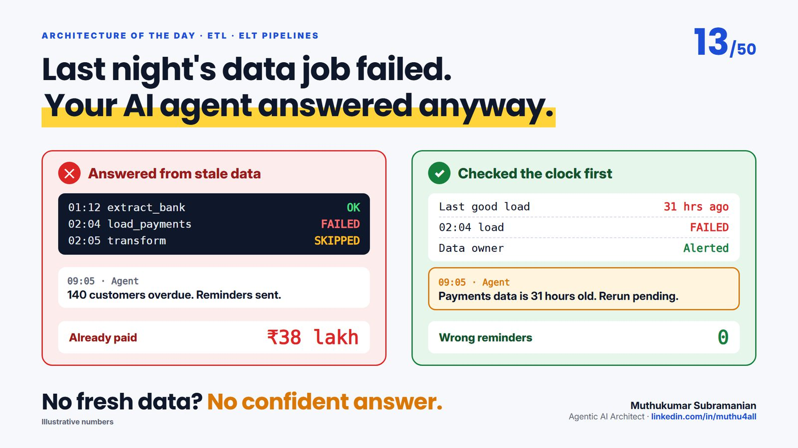

Last Night's Data Job Failed. Your AI Agent Answered Anyway.
By Muthukumar Subramanian · Agentic AI Architect

9:05 on a Monday morning. The finance head of a yarn distributor in Coimbatore asks the company's AI agent a simple question: "Who owes us money for more than 90 days?"
The agent answers in four seconds. 140 customers. It drafts the reminders, and the collections team sends them before lunch.
By 3 PM the phone won't stop ringing. Most of those customers had already paid, ₹38 lakh of it, by UPI and bank transfer over the weekend. (The firm and its numbers are illustrative. The pattern is very real.)
Nobody's model was wrong. The 2 AM job that loads payments into the warehouse had failed. Nobody looked. The agent read yesterday's data and said it in today's voice.
Old data, said confidently, is the most expensive kind of wrong.
The architecture today
Almost every company runs some version of this, whether they call it ETL or ELT. Every night, jobs pull data out of Tally, the bank statement, the GST portal and the CRM. They load it into a warehouse and reshape it into clean tables for reports.
ETL cleans the data before loading it. ELT loads it first and cleans it inside the warehouse. Tools like Airflow or Dagster decide what runs when, and dbt does much of the reshaping.
When a job fails, an email goes to a shared inbox. On a good day someone reads it. On a long weekend, nobody does, and the dashboard quietly shows Friday's numbers on Monday.
For years that was survivable, because a human read the dashboard and usually noticed something looked off. An agent doesn't notice. It acts.
👉 [IMAGE: A-day13-2-in-article-architecture.png]
Caption: The nightly pipeline you already have, with two new amber parts: an AI step that cleans messy records, and a freshness gate the agent must pass before it answers.
Where AI plugs in now: inside the pipeline, not after it
The first, low-risk place for AI is the messiest step in the pipeline: the records nobody can match by rule.
→ Extract. Pull the GSTIN, invoice number and amount out of a PDF or an email body.
→ Classify. Is "Sri Murugan Textiles", "SRI MURUGAN TEX" and "S. Murugan & Co" one vendor or three?
→ Clean. Fix addresses, split pin codes, flag rows that don't add up.
Warehouses now let you do this in plain SQL. Snowflake's Cortex AI functions and Databricks' ai_extract and ai_query run a model over a table, row by row. Keep plain code for anything with a right answer, though. A GSTIN has a checksum. Don't ask a model to guess it.
Where it's heading with agents
Here's the shift I care about. Until now, pipelines fed dashboards, and people read dashboards. Now pipelines feed agents, and agents send reminders, approve refunds and answer the CFO.
So every agent that reads company data needs one habit before it speaks: check the clock.
→ Did last night's job finish?
→ How old is the newest row?
→ Does today's row count look normal?
→ Did the data contract hold: same columns, same types, no missing GSTINs?
If any answer is no, the agent says so. "Payments data is 31 hours old. The 2 AM load failed. I've told the data owner. Want yesterday's answer with that warning?"
"I don't know yet" is a valid answer. "140 customers" was not.
The pieces exist. dbt has source freshness checks with warn and error thresholds. Dagster has freshness checks on its assets. Soda, Great Expectations and Monte Carlo watch quality and volume. What's missing in most companies is the wire between those signals and the agent. In two or three years, I expect every serious agent to carry a freshness stamp on every answer, the way a bank statement carries a date.
👉 [IMAGE: A-day13-3-in-article-freshness-checklist.png]
Caption: Five checks before an agent answers from company data. Screenshot it for your next design review.
Watch it work
Same night, same failed job, same 9:05 question. Two different agents.
👉 [GIF: A-day13-4-in-article-night-shift.gif]
Caption: Top: the agent answers anyway. Bottom: the freshness gate holds the answer and wakes the owner. All figures illustrative.
Pros
→ AI steps clear the messy records that rules never could: vendor names, addresses, free-text remarks
→ A freshness gate turns a silent failure into a visible one, before money moves
→ You don't replace the pipeline. Airflow, dbt and the warehouse stay exactly where they are
Cons
→ Model steps inside a pipeline cost money per row and can drift, so a clean run today isn't proof for next month
→ More checks mean more alerts, and teams learn to ignore noisy alerts
→ "Hold the answer" annoys users. Someone has to decide which questions can wait and which can't
The hard part
It isn't the tooling. It's ownership. When the 2 AM job fails, who gets woken up? The data team says the agent should've checked. The AI team says the data should've been there. The CFO just wants to know who sent 140 wrong reminders.
That gap is where new roles are forming. An AgentOps engineer wires the freshness checks into the agent's tools and owns the "hold or warn" rules. A forward deployed engineer (FDE), an engineer who sits with the customer's team and ships on their real systems, is the person who learns that finance needs the payments table fresh by 9 AM and nothing else matters as much. The titles are still settling. The work is already here.
The opportunity
Every company that put an agent on top of a warehouse now has this risk, and most don't know it yet. They'll pay to find out before an auditor or a customer does.
That's the market: AI-assisted data engineering and data-reliability services. Audit the pipelines that feed each agent. Add AI cleaning steps where rules fail. Put a freshness gate and a data contract between the warehouse and every agent. Then run it as a monthly service, with one report: which answers went out on stale data, and what that would've cost.
In India, start with NBFCs, distributors and D2C brands. Their money moves through UPI all weekend, and their pipelines still run on a Monday-morning assumption.
Tools to try
dbt for transformations and source freshness checks · Airflow or Dagster to orchestrate and check freshness · Fivetran, now merged with dbt Labs, for loading · Soda, Great Expectations or Monte Carlo for data quality and observability · Snowflake Cortex AI functions or Databricks ai_extract for model steps in SQL, with any model API behind your agent: OpenAI, Claude or Gemini.
Your turn 👇
When the data is stale, should your agent warn or wait? One word.
Tag the data engineer whose phone rings when the 2 AM job fails.
Day 13 of 50 · follow along. Tomorrow: Day 14 · Fraud Takes 3 Seconds. Your AI Agent Is Reading Yesterday's Data.